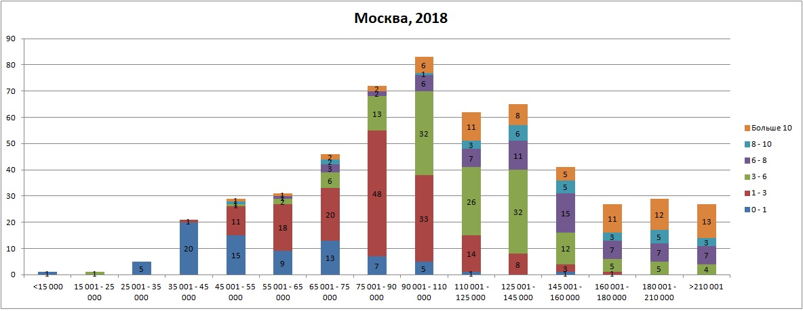
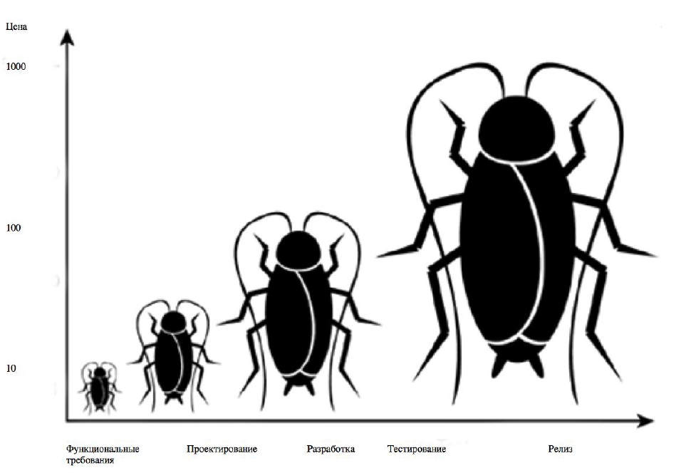

Тестирование ПО
- Бакалавр БФ ПНИПУ специальности ИВТ
- Учусь в магистратуре БФ ПНИПУ
- 6+ лет в тестировании
- 2+ лет в Яндексе
Чего не будет в лекции
Что будет в лекции
- Тестирование как профессия
- Вводная лекция
- Технологии
- О собеседованиях
Нужны ли тестировщики?
ДА
ЗП по Москве на 2018 год:

Тестирование - это
- проверка соответствия реального поведения программы ожидаемому, осуществляемая путем наблюдения за ее работой в специальных, искусственно созданных ситуациях, выбранных определенным образом.
- Процесс, содержащий в себе все активности жизненного цикла, как динамические, так и статические, касающиеся планирования, подготовки и оценки программного продукта и связанных с этим результатов работ с целью определить, что они соответствуют описанным требованиям, показать, что они подходят для заявленных целей и для определения дефектов [ISTQB, глоссарий]
Зачем?
Говорим правильно
- Ошибка [ISQTB] Действие человека, которое приводит к неправильному результату.
- Дефект - результат ошибочного действия: можно не заметить, но он есть.
- Сбой - проявление дефекта при использовании системы
- Баг - жаргонный синоним "дефект"
[ISQTB] Изъян в компоненте или системе, который может привести компонент или систему к невозможности выполнить требуемую функциональность, например, неверный оператор или определение данных. Дефект, обнаруженный во время выполнения, может привести к отказам компонента или системы.
Этапы тестирования
- Тест-анализ
- Таст-дизайн
- Написание документации
- Тестирование
Тест-анализ - это процесс при котором изучаются требования к ПО, декомпозируются, ищутся несоответствия и серые зоны и т.д.
Требования - условия или возможности, необходимые пользователю для решения определенных задач или достижения определенных целей, которые должны быть достигнуты для выполнения контракта, стандартов, спецификации, или других формальных документов. [IEEE 610]
На странице должна быть кнопка "Закрыть"
- Где находится?
- Как выглядит?
- Как закрывает?
- Какая приемлемая скорость закрытия?
- и тд
Я рисую в XMind
Есть аналоги для рисования mind map
Наши требования ИДЕАЛЬНЫЕ и мы их все знаем?

Тест-дизайн - это процесс проектирования и создания тестовых случаев
- Исчерпывающее тестирование
- Классы эквивалентности
- Анализ граничных условий
- Ортогональные вектора
- Попарное тестирование
- Тест-кейсы
- Чек-лист
- Тест-план
- Отчет об ошибке
- Отчет о тестировании
Цель тестирования
Предоставление обратной связи о состояния продукта
Задача тестирования
Выявить проблемы, которые могут возникнуть при работе с продуктом и сделать все возможное для улучшения его качества
Качество ПО
[Software Quality] — совокупность характеристик ПО, которые относятся к способности продукта удовлетворять запланированным, установленным и предполагаемым потребностям.
Тестирование АПИ
API (Application Programming Interface) — это интерфейс программирования, интерфейс создания приложений
_____________
контракт, который предоставляет программа. «Ко мне можно обращаться так и так, я обязуюсь делать то и это»
(с) Хабр
- Postman
- CURL
Запрос:
POST -d "key=trnsl.1.1.20191103T112235Z
.a986e944f6b970.4d44c8acfdf5b5e89017e2
&format=plain&lang=en-de&text=Hello world"
https://translate.yandex.net/api/v1.5/tr.json/translate
Ответ:
"code":200,"lang":"en-ru",
"text":["Привет мир"]}Нагрузочное тестирование
Яндекс.Танк
JMeter
Автоматизированное тестирование
Unit-тесты
- Белый ящик
- Черный ящик
function getParam(func) {
if (!Array.isArray(func)) {
throw new Error('func is not an array');
}
if (func.length !== 5) {
throw new Error('Wrong amount of func');
}
/* ... */
}
describe('getParam', () => {
it('should throw error when func is not array', ()=>{
const cb = () => getParam('not array');
assert.throws(cb, /func is not array/);
});
assert.deepEqual
assert.deepStrictEqual
assert.doesNotThrow
assert.equal
assert.fail
assert.fail
assert.ifError
assert.notDeepEqual
assert.notDeepStrictEqual
assert.notEqual
assert.notStrictEqual
assert.ok
assert.strictEqual
assert.throws
Подходы к разработке
- Test last development [TDL]
- Test driven development [TDD]
Интеграционное тестирование
END-TO-END
Selenium + js / java / c++ / python + драйвер браузера + webdriver IO
public class TestOne extends setting {
@Test
public void oneT() {
driver.get("https://yandex.ru/");
driver.findElement(By.cssSelector("#pasp > a")).click();
driver.findElement(By.cssSelector("#contest-name")).sendKeys("test acm");
driver.findElement(By.xpath("//*[@id=\"create-user\"]")).click();
public void setUp() {
driver = new ChromeDriver();
driver.get("https://yandex.ru/");
Cookie ck = new Cookie("Session_id", "3:1573582119.Qzv3O-UkDA");
Cookie setCk = new Cookie("yandexuid", "2871081526991954");
driver.manage().deleteAllCookies();
driver.manage().addCookie(ck);
driver.manage().addCookie(setCk);
}
Собеседование
Спасибо за внимание!
Вопросы?
______________________________
Литература
- «Тестировщик — больше, чем профессия» http://habrahabr.ru/post/221447/
- «Что должен уметь начинающий тестировщик»: С чего начать, как прокачаться, во что углубиться http://testbase.ru/
- Роман Савин «Тестирование dot.com»
- Сэм Канер «Тестирование программногo обеспечения»